Manual - Help File
Table Of Content
- Introduction
- Features
- Installation
- Usage
-
Components
- Factory
- Core
-
Addons
- About sIBL_GUI
- Database Operations
- Gps Map
- Ibl Sets Scanner
- Images Caches Operations
- Loader Script
- Loader Script Options
- Locations Browser
- Logging Notifier
- Online Updater
- Projects Explorer
- Preview
- Raw Editing Utilities
- Rewiring Tool
- Search Database
- sIBLedit Utilities
- TCP Client Ui
- TCP Server Ui
- Trace Ui
- Api
- Faq
- Changes
- About
Introduction
More detailed informations are available here: http://www.smartibl.com
Donations
With sIBL_GUI 4 release I decided to accept donations, so if you think the application is worth something you can use the following Paypal button:
Features
Why an external application instead of directly using scripting capabilities of the 3d package itself? There are advantages and inconvenient with both methods.
With an external application, .Ibl files format parsing, Collections management and database inspection are handled by that application, you write that Framework once and then you can reuse it for other 3d packages.
The bridge between sIBL_GUI and the 3d package is done through Templates that output simple loader scripts. That’s one of sIBL_GUI strength: It only took a few hours to convert the Autodesk Softimage Mental Ray Template into an Autodesk Maya Mental Ray one. Scripting a native tool with a good interface offering same functionalities as sIBL_GUI would have taken days if not weeks.
sIBL_GUI is built around Umbra Framework in Python and uses some others major libraries / tools:
- Nokia Qt Ui Framework is used for the Interface thanks to PyQt bindings.
- SQLAlchemy provides the database backbone.
- SQLAlchemy-migrate adds support for database migrations.
- Sphinx provides the documentation build system.
- Tidy is used to cleanup docutils documentation html files.
The following softwares are used to generate the Windows and Mac Os X installers:
Some highlights:
- Components based Framework.
- Configurable Ui Layout.
- SQlite Database.
- Online Updater.
- Microsoft Bing Maps Gps map.
- Internal Images Previewer.
- Online Exceptions Reporter.
and much more…
Additional informations about sIBL_GUI are available into this development thread: sIBL_GUI Thread
Installation
Windows Platform
Installation on Windows is pretty straightforward, just launch sIBL_GUI.exe. In order to support third party images formats through FreeImage you may need to install Microsoft Visual C++ 2010 Redistributable Package (x64).
Mac Os X Platform
Open sIBL_GUI.dmg and drag sIBL_GUI 4.app into the Application directory.
Linux Platform
The following dependencies are needed:
- Python 2.6.7 or Python 2.7.3: http://www.python.org/
- PyQt: http://www.riverbankcomputing.co.uk/
To install sIBL_GUI from the Python Package Index you can issue this command in a shell:
pip install sIBL_GUI
or this alternative command:
easy install sIBL_GUI
Templates are not included by default and can be downloaded from sIBL_GUI_Templates repository.
If you want to support third party images formats through FreeImage, you will need to recompile FreeImage with the following patch over it:
- FreeImage_For_sIBL_GUI: https://github.com/KelSolaar/FreeImage_For_sIBL_GUI
Alternatively, if you want to directly install from Github source repository:
git clone git://github.com/KelSolaar/sIBL_GUI.git cd sIBL_GUI python setup.py install
If you want to build the documentation you will also need:
Usage
Once installed, you can launch sIBL_GUI using this shell command:
sIBL_GUI
User Preferences
sIBL_GUI preferences are stored per user in their home directory:
- C:\Users\$USER\AppData\Roaming\HDRLabs\sIBL_GUI on Windows 7
- C:\Documents and Settings\$USER\Application Data\HDRLabs\sIBL_GUI on Windows XP
- /Users/$USER/Library/Preferences/HDRLabs/sIBL_GUI on Mac Os X
- /home/$USER/.HDRLabs/sIBL_GUI on Linux
The typical sIBL_GUI preferences directory structure is the following:
| 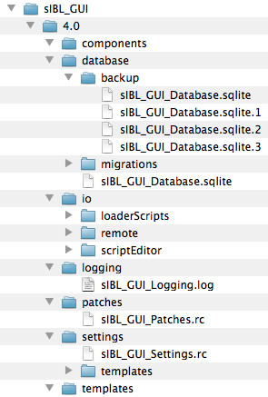 |
Structure Description:
-
$MAJOR_VERSION.$MINOR_VERSION: Current sIBL_GUI version.
- components: Directory storing user Components.
-
database: Directory storing the SQLite database.
- backup: Directory used by the Database Component when it backups the database.
-
migrations: Directory used by the Database migration mechanism responsible to migrate the database.
- versions: Directory used by to store the various migrations scripts.
-
io: Directory used for sIBL_GUI input / output operations.
- loaderScripts: Directory used as output directory by the Loader Script Component.
- remote: Directory used by the Online Updater Component when it downloads online files.
- scriptEditor: Directory containing the default scripts used by the Script Editor Component.
- logging: Directory storing sIBL_GUI logging file.
- patches: Directory storing sIBL_GUI patches file.
-
settings: Directory storing sIBL_GUI settings file.
- templates: Directory storing Templates settings.
- templates: Directory storing user Templates (This directory is scanned by sIBL_GUI when importing default Templates).
Command Line Parameters
sIBL_GUI accepts various command line parameters:
- -h, —help: Display the command line parameters help message and exit. (Mac Os X and Linux only)
- -a, —about: Display application About message. (Mac Os X and Linux only)
- -v VERBOSITYLEVEL, —verbose=VERBOSITYLEVEL: Application verbosity levels: 0 = Critical | 1 = Error | 2 = Warning | 3 = Info | 4 = Debug.
- -f LOGGINGFORMATER, —loggingFormatter=LOGGINGFORMATER: Application Logging Formatter: 'Default, Extended, Standard’.
- -u USERAPPLICATIONDATASDIRECTORY, —userApplicationDataDirectory=USERAPPLICATIONDATASDIRECTORY: User application data directory (Preferences directory).
- -s, —hideSplashScreen: The SplashScreen is not displayed during application startup.
- -w, —deactivateWorkerThreads: The Worker Threads are deactivated.
- -x STARTUPSCRIPT, --startupScript=STARTUPSCRIPT: Execute given startup script.
- -t TRACEMODULES, --traceModules=TRACEMODULES: Trace given modules.
- -d DATABASEDIRECTORY, —databaseDirectory=DATABASEDIRECTORY: Database directory.
- -r, —databaseReadOnly: Database is read only, database write access methods are not exposed into the interface.
- -o LOADERSCRIPTSOUTPUTDIRECTORY, —loaderScriptsOutputDirectory=LOADERSCRIPTSOUTPUTDIRECTORY: Loader scripts output directory.
Note: On Mac Os X, sIBL_GUI is launched from command line doing the following:
cd sIBL_GUI.app ./Contents/MacOS/sIBL_GUI
If you want to share the same Database between multiple installed versions of sIBL_GUI there are 2 solutions:
Dirty Method
Copy the Database file sIBL_Database.sqlite on every machine that have sIBL_GUI installed.
The file is located in one of those directory depending your OS:
- C:\Users\$USER\AppData\Roaming\HDRLabs\sIBL_GUI\$MAJOR_VERSION.$MINOR_VERSION\database\ on Windows 7
- C:\Documents and Settings\$USER\Application Data\HDRLabs\sIBL_GUI\$MAJOR_VERSION.$MINOR_VERSION\database\ on Windows XP
- /Users/$USER/Library/Preferences/HDRLabs/sIBL_GUI/$MAJOR_VERSION.$MINOR_VERSION/database/ on Mac Os X
- /home/$USER/.HDRLabs/sIBL_GUI/$MAJOR_VERSION.$MINOR_VERSION/database/ on Linux
Recommended Method
It’s possible to share one Database file between multiple sIBL_GUI install. In order to do that you need to start sIBL_GUI with some command line parameters:
- -d DATABASEDIRECTORY, —databaseDirectory=DATABASEDIRECTORY: This one is mandatory for what you want to do, it will tell sIBL_GUI to store / use the database on the provided path.
- -r, —databaseReadOnly: This one is optional, but HIGHLY recommended: It will hide / unexpose from the UI all methods that can write to the Database. That’s something important because the last thing you want is someone screwing the whole database by doing a mistake.
Example Command Line:
C:\\HDRLabs\\sIBL_GUI\\sIBL_GUI.exe -d “Z:/sIBL_Database/” -r
When the Database is read only, the automatic scanner adding new IBL Sets is deactivated meaning that newly IBL Sets dropped into your library directory won’t be added automatically.
It’s a good idea to put the Database with a real file system write lock in case someone launch a sIBL_GUI instance without the command line arguments.
That way you can have artists using the Database a supervisor has defined, and even using different Databases depending on their current production.
IBL Sets Wizard
The first time sIBL_GUI is started a wizard asks to add IBL Sets into the database:
| 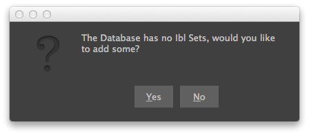 |
Choose a directory where are stored some IBL Sets and they will be added to the Default Ibl Sets Collection.
| 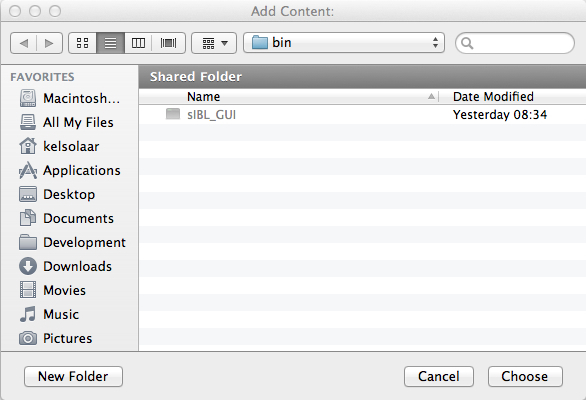 |
Interface
sIBL_GUI Interface is customizable and comes with 3 main layouts directly available from the main toolbar:
Toolbar
| 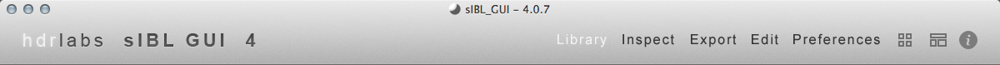 |
Interactions:
Right clic: raises a context menu with the Ui Widgets list:
| 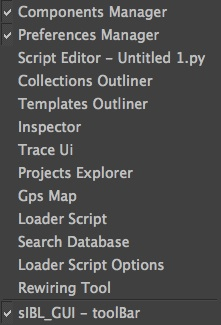 |
Central Widget icon: Shows / Hides the Ibl Sets Outliner Component widget Ui.
Layouts icon: Raises a context menu where the user can store / restore up to 5 custom layouts and recall them whenever needed:
| 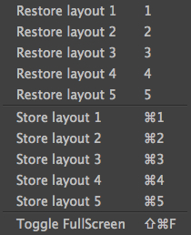 |
Miscellaneous icon: Raises a context menu with some links and miscellaneous functionalities:

|
Library Layout
The Library layout is where most of the IBL Sets management is done.
This layout is built around 4 Components:
- Collections Outliner (core.collectionsOutliner)
- Ibl Sets Outliner (core.iblSetsOutliner)
- Search Database (addons.searchDatabase)
- Gps Map (addons.gpsMap)
| 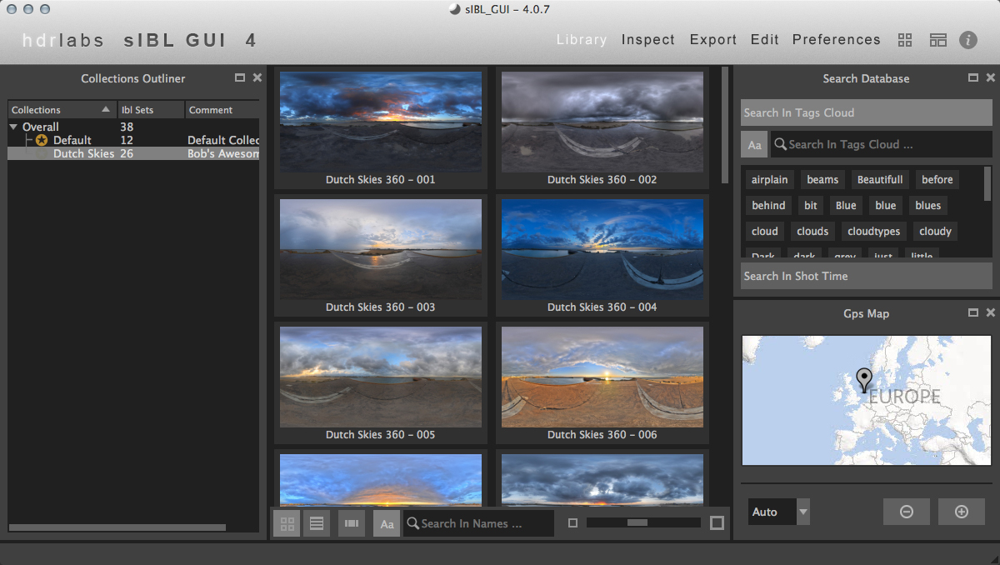 |
Inspect Layout
The Inspect layout is where Ibl Set inspection is done.
This layout is built around 3 Components:
- Collections Outliner (core.collectionsOutliner)
- Inspector (core.inspector)
- Gps Map (addons.gpsMap)
| 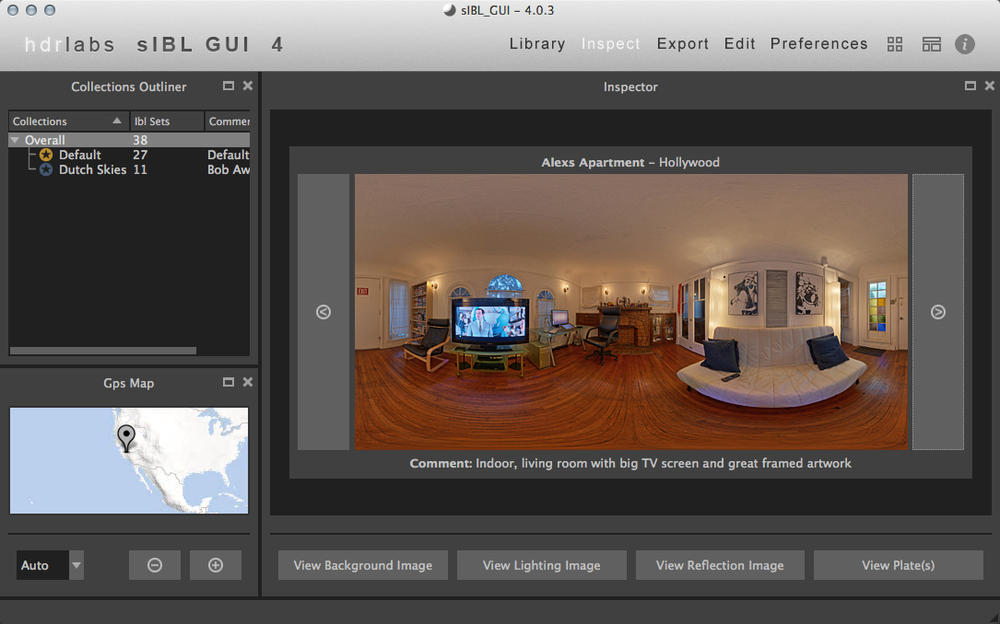 |
Export Layout
The Export layout is where the bridge between sIBL_GUI and the 3d packages is created.
This layout is built around 4 Components:
- Templates Outliner (core.templatesOutliner)
- Ibl Sets Outliner (core.iblSetsOutliner)
- Loader Script (addons.loaderScript)
- Loader Script Options (addons.loaderScriptOptions)
An additional but extremely powerful export related Component is available by right clicking the main toolbar:
- Rewiring Tool (addons.rewiringTool)
| 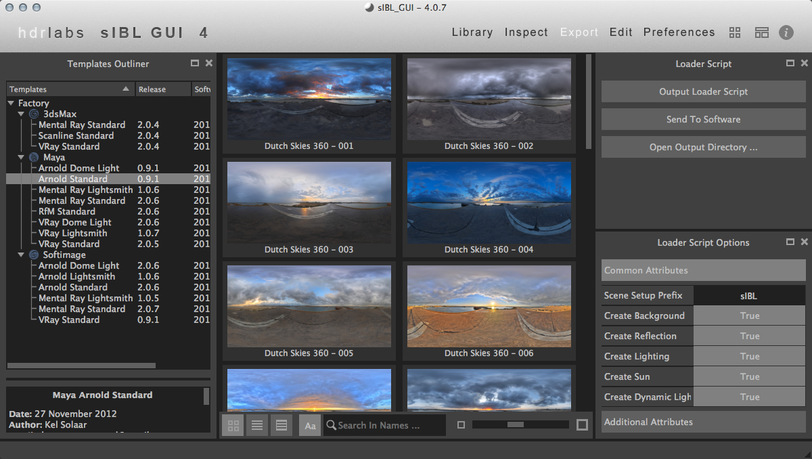 |
Edit Layout
The Edit layout is where Ibl Set are edited.
This layout is built around 2 Component:
- Projects Explorer (addons.projectsExplorer)
- Script Editor (factory.scriptEditor)

|
Preferences Layout
The Preferences layout is where sIBL_GUI behavior is configured.
This layout is built around 2 Components:
- Components Manager Ui (factory.componentsManagerUi)
- Preferences Manager (factory.preferencesManager)
| 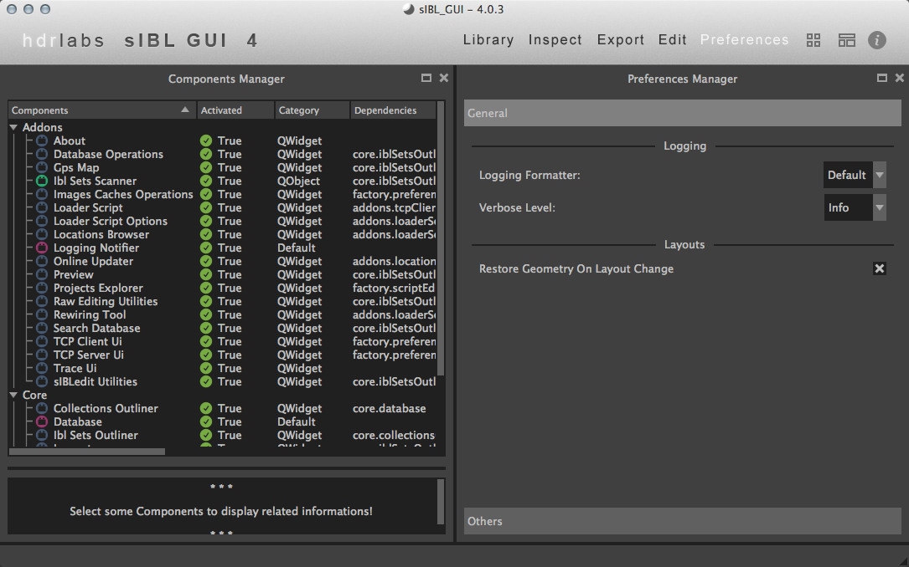 |
Components
sIBL_GUI has currently 3 categories of Components:
- Default Component (Components inheriting from Python Object).
- QWidget Component (Components inheriting from Qt QWidget).
- QObject Component (Components inheriting from Qt QObject).
Those 2 types are split into 4 main families:
- Factory (Factory required Components, not deactivable and not removable).
- Core (Core required Components, not deactivable and not removable).
- Addons (Factory optional Components, deactivable and removable).
- User (User optional Components, deactivable and removable).
Factory
Components Manager Ui (factory.componentsManagerUi)
| 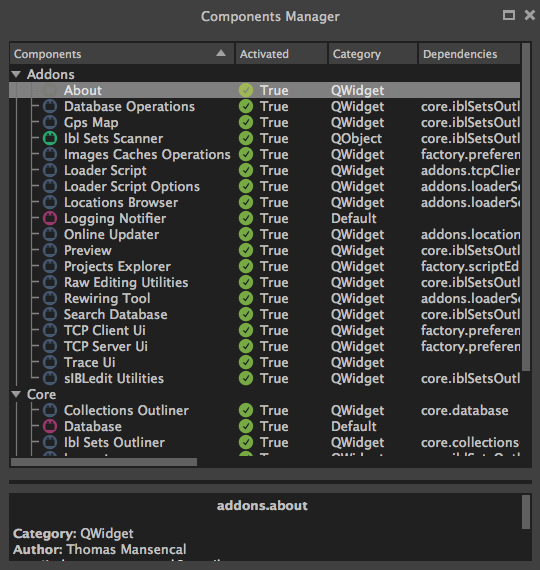 |
The Components Manager Ui Component allows sIBL_GUI addons and user Components activation / deactivation (Factory and Core Components are required and not deactivable). Selected Components details are displayed in the bottom Components Informations widget.
Interactions:
- Right clic: Displays a context menu described further.
Columns Descriptions:
- Components: Components names (Components are sorted by families).
- Activated: Components activations status.
- Category: Components categories (Default or Ui).
- Dependencies: Components dependencies on others Components.
- Version: Components versions.
Context menu:
| 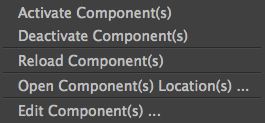 |
- Activate Component(s): Activates selected Component(s).
- Dectivate Component(s): Deactivates selected Component(s).
- Reload Component(s): Reloads selected Component(s) (Deactivates the Component, reloads Component code, activates back the Component).
Addons Functionalities:
- Open Component(s) Location(s) ...: Opens selected Component(s) directory(s).
- Edit Component(s) ...: Edits selected Component(s) in Script Editor Component.
Preferences Manager (factory.preferencesManager)
| 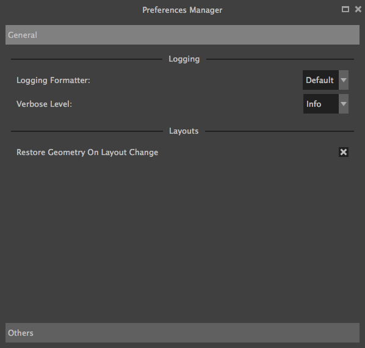 |
The Preferences Manager Component is used to configure sIBL_GUI behavior. There are 2 pages where settings can be changed:
- General: Overall sIBL_GUI settings.
- Others: Components settings.
General Page:
-
Logging Formatter: Adjusts sIBL_GUI logging formatter:
- Default: Default logging formatter: Logging Level: Message.
- Extended: Extended logging formatter: Time - Thread - Logging Level: Message.
- Standard: Simple standard logging formatter: Message.
-
Verbose Level: Adjusts sIBL_GUI verbose level between different modes (Debug being the most verbosing, Critical the less):
- Debug
- Info
- Warning
- Error
- Critical
- Restore Geometry On Layout Change: sIBL_GUI window size and position will be restored when switching layouts.
Others Page:
Those settings are Components dependent and will be described per related Component.
Script Editor (factory.scriptEditor)
| 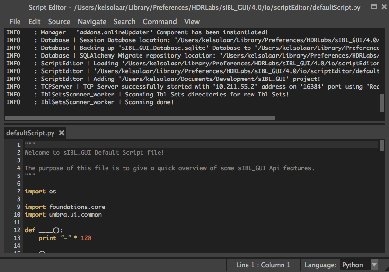 |
The Script Editor Component allows directly interaction with sIBL_GUI through scripting. It provides various code input acceleration mechanism like basic autocompletion, syntax highlighting, etc ... A status bar widget displays various informations about the currently edited document and allows language grammar change.
Interactions:
- Language Combo Box: Switches the current editor language.
-
Drag’n’drop:
- Drag’n’dropping an IBL Sets or Templates selection into the Script Editor Component will open their associated files.
- Drag’n’dropping any other type of file on sIBL_GUI will open it in the Script Editor Component.
Menus Bar:
File Menu:
| 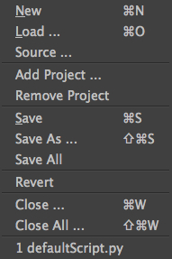 |
- New: Adds a new editor.
- Load ...: Loads user chosen file in a new editor.
- Source ...: Loads user chosen file in a new editor and execute its content.
- Save: Saves current editor content.
- Save As ...: Saves current editor content as user chosen file.
- Save All: Saves all editors content.
- Revert: Reverts current editor content.
- Close: Closes current editor.
- Close All: Closes all editors.
Addons Functionalities:
- Add Project ...: Adds user chosen Project.
- Remove Project: Removes selected Projects Explorer Component Project.
Edit Menu:

|
- Undo: Undo current editor last changes.
- Redo: Redo current editor reverted changes.
- Cut: Cuts current editor selected content.
- Copy: Copies current editor selected content.
- Paste: Pastes clipboard content into current editor.
- Delete: Deletes current editor selected content.
- Select All: Selects all editor content.
Source Menu:

|
- Delete Line(s): Deletes current editor selected line(s).
- Duplicate Line(s): Duplicates current editor selected line(s).
- Move Up: Move up current editor selected line(s).
- Move Down: Move down current editor selected line(s).
- Indent Selection: Indents current editor selected content.
- Unindent Selection: Unindents current editor selected content.
- Convert Indentation To Tabs: Converts current editor indentation to tabs.
- Convert Indentation To Spaces: Converts current editor indentation to spaces.
- Remove Trailing Whitespaces: Removes current editor trailing whitespaces.
- Toggle Comments: Toggles comments on current editor selected content.
Navigate Menu:

|
- Goto Line ...: Scrolls current editor to user chosen line.
Search Menu:

|
- Search And Replace ...: Launches the Search And Replace dialog described further below.
- Search In Files ...: Launches the Search In Files dialog described further below.
- Search Next: Searches next occurence of current editor selected text.
- Search Previous: Searches previous occurence of current editor selected text.
Command Menu:
| 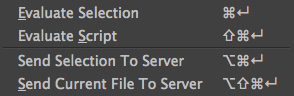 |
- Evaluate Selection: Evaluates current editor selected text.
- Evaluate Script: Evaluates current editor content.
Addons Functionalities:
- Send Selection To Server: Sends current editor selected text to TCP Client Ui Component defined server.
- Send Current File To Server: Sends current editor file to TCP Client Ui Component defined server.
View Menu:
| 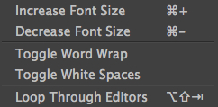 |
- Increase Font Size: Increases current editor font size.
- Decrease Font Size: Decreases current editor font size.
- Toggle Word Wrap: Toggles word wrap on current editor.
- Toggle Whitespaces: Toggles whitespaces display on current editor.
- Loop Through Editors: Loops through editors.
Dialogs:
Search And Replace:
| 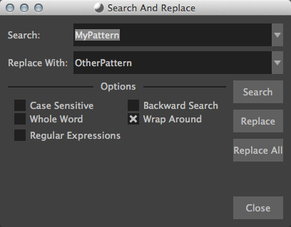 |
- Search Combo Box: Defines the search pattern.
- Replace With Combo Box: Defines the replacement pattern.
- Case Sensitive Check Box: Search will be performed case sensitively.
- Whole Word Check Box: Search will be performed within words boundaries.
- Regular Expressions Check Box: Search will be performed using Regular Expressions.
- Backward Search Check Box: Search will be performed backward.
- Wrap Around Check Box: Search will wrap around when reaching the editor end.
- Search Push Button: Performs the search and highlight editor first matched occurence.
- Replace Push Button: Performs the search and replace editor first matched occurence.
- Replace All Push Button: Performs the search and replace all editor matched occurence.
Search In Files:
| 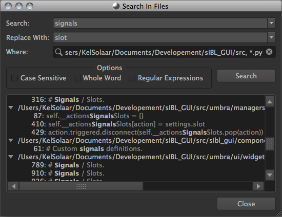 |
- Search Combo Box: Defines the search pattern.
- Replace With Combo Box: Defines the replacement pattern.
- Where Line Edit: Defines the search location (Clicking the magnifier brings a context menu).
- Case Sensitive Check Box: Search will be performed case sensitively.
- Whole Word Check Box: Search will be performed within words boundaries.
- Regular Expressions Check Box: Search will be performed using Regular Expressions.
- Search Push Button: Performs the search and highlight editor first matched occurence.
Magnifier Context menu:

|
- Add Directory ...: Adds user chosen directory.
- Add File ...: Adds user chosen file.
- Add Opened Files: Adds opened files pattern.
- Add Include Filter: Adds include glob files filter.
- Add Exclude Filter: Adds exclude glob files filter.
Results View Context menu:
| 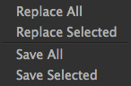 |
- Replace All: Replaces all search results with given replace pattern.
- Replace Selected: Replaces selected search results with given replace pattern.
- Save All: Saves all modified files.
- Save Selected: Saves Selected modified files.
Core
Collections Outliner (core.collectionsOutliner)
| 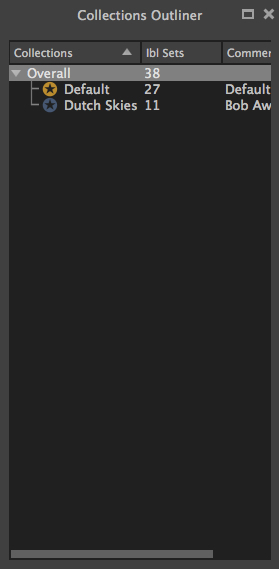 |
Interactions:
- Double clic: Edits Collection name or comment.
- Right clic: Displays a context menu described further.
-
Drag’n’drop:
- Drag’n’dropping an IBL Sets selection from the Ibl Sets Outliner Component to a Collections Outliner Component Collection changes given IBL Sets current Collection.
- Drag’n’dropping some IBL Sets files or directories from the Os will raise a message box asking confirmation for their addition into the database.
Columns Descriptions:
- Collections: Collections names (Editable through double click).
- IBL Sets: IBL Sets count per Collections.
- Comments: Collections comments (Editable through double click).
Context menu:
| 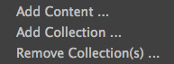 |
- Add Content ...: Adds a new Collection, then recursively adds chosen directory IBL Sets into the database, assigning them to the new Collection.
- Add Collection ...: Adds a new Collection to the database.
- Remove Collection(s) ...: Removes selected Collections from the database (Overall and Default Collections cannot be removed).
Note:
While adding a new Collection, a comment can be directly provided by using a comma separated name and comment.
| 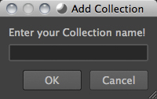 |
Database (core.database)
The Database Component is the heart of sIBL_GUI data storage, it provides the database manipulation, read, write, migration and rotating backup methods.
Ibl Sets Outliner (core.iblSetsOutliner)

|
The Ibl Sets Outliner Component is the central Component where IBL Sets are viewed and chosen for export. The Component is tracking the IBL Sets files on the disk and reload them automatically when modified.
IBL Sets can be viewed using different views depending the user needs:
Columns View:
| 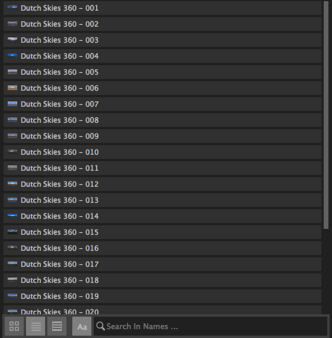 |
Details View:
| 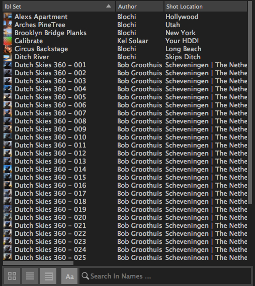 |
Columns Descriptions:
- Ibl Set: IBL Sets titles (Editable through double click).
- Author: IBL Sets authors.
- Shot Location: IBL Sets shot locations.
- Latitude: IBL Sets shot locations latitudes.
- Longitude: IBL Sets shot locations Longitudes.
- Shot Date: IBL Sets shot days.
- Shot Time: IBL Sets shot times.
- Comment: IBL Sets comments.
Interactions:
- Double clic: Opens the current Ibl Set in the Inspector Component.
- Right clic: Displays a context menu described further.
-
Drag’n’drop:
- Drag’n’dropping an IBL Sets selection from the Ibl Sets Outliner Component to a Collections Outliner Component Collection change the selected sets Collection.
- Drag’n’dropping some IBL Sets files or directories from the Os will raise a message box asking confirmation for their addition into the database.
- Hovering: Hovering an Ibl Set raises a popup with informations about the focused Ibl Set.
- Thumbnails View Push Button: Switch the current view to Thumbnails View.
- Columns View Push Button: Switch the current view to Columns View.
- Details View Push Button: Switch the current view to Details View.
- Case Sensitive Matching Push Button: Search will be performed case sensitively if the button is checked.
- Search Database Line Edit: It allows IBL Sets filtering. The string entered will be matched in the selected database field. Regular expressions are accepted. An autocompletion list will be raised once characters starts being typed. Clicking the magnifier glass raises a context menu pictured below allowing to choose the current database field.
- Thumbnails Size Horizontal Slider: Adjusts IBL Sets icons size.
Context menu:
| 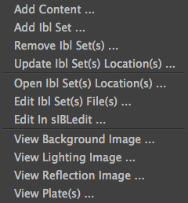 |
- Add Content ...: Recursively adds chosen directory IBL Sets into the database assigning them to the selected Collections Outliner Component Collection or the Default Collection if none is selected.
- Add Ibl Set ...: Adds the selected Ibl Set file into the database assigning it to the selected Collections Outliner Component Collection or the Default Collection if none is selected.
- Remove Ibl Set(s) ...: Removes selected IBL Sets from the database.
- Update Ibl Set(s) Location(s) ...: Updates selected IBL Sets files paths.
Addons Functionalities:
- Edit In sIBLedit ...: Sends selected IBL Sets to sIBLedit.
- Open Ibl Set(s) Location(s) ...: Opens selected IBL Sets directories.
- Edit Ibl Set(s) File(s) ...: Edits selected IBL Sets in the Script Editor Component or custom user defined text editor.
- View Background Image ...: Views selected IBL Sets background images in either the Internal Images Previewer or the application defined in the Preview Component preferences.
- View Lighting Image ...: Views selected Ibls Set lighting images in either the Internal Images Previewer or the application defined in the Preview Component preferences.
- View Reflection Image ...: Views selected Ibls Set reflection images in either the Internal Images Previewer or the application defined in the Preview Component preferences.
- View Plate(s) ...: Views selected Ibls Set plates images in either the Internal Images Previewer or the application defined in the Preview Component preferences.
Search widget context menu:

|
Inspector (core.inspector)
| 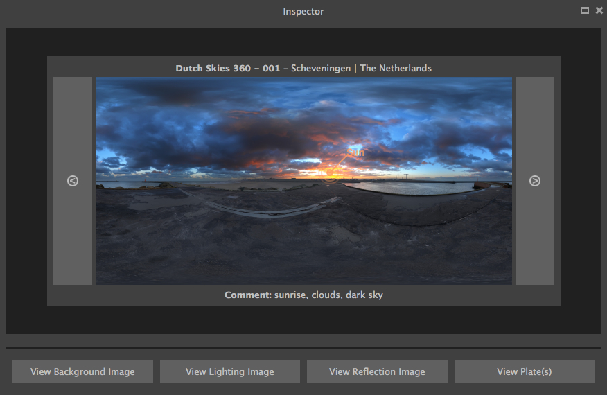 |
The Inspector Component allows Ibl Set inspection.
Interactions:
- Right clic: Displays a context menu described further.
- Hovering: Hovering Inspector Ibl Set raises a popup with informations about the Inspector Ibl Set.
- Previous Ibl Set Push Button: Navigates to previous Ibl Set in the current selected Collection.
- Next Ibl Set Push Button: Navigates to next Ibl Set in the current selected Collection.
- Previous Plate Push Button: Navigates to previous Inspector Ibl Set plate.
- Next Plate Push Button: Navigates to next Inspector Ibl Set plate.
Addons Functionalities:
- View Background Image Push Button: Views Inspector Ibl Set background image in either the Internal Images Previewer or the application defined in the Preview Component preferences.
- View Lighting Image Push Button: Views Inspector Ibl Set lighting image in either the Internal Images Previewer or the application defined in the Preview Component preferences.
- View Reflection Image Push Button: Views Inspector Ibl Set reflection image in either the Internal Images Previewer or the application defined in the Preview Component preferences.
- View Plate(s) Push Button: Views Inspector Ibl Set plates images in either the Internal Images Previewer or the application defined in the Preview Component preferences.
Context menu:
| 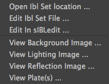 |
Addons Functionalities:
- Edit In sIBLedit ...: Sends Inspector Ibl Set to sIBLedit.
- Open Ibl Set Location ...: Opens Inspector IBL Sets directory.
- Edit Ibl Set File ...: Edits Inspector Ibl Set in the Script Editor Component or custom user defined text editor.
- View Background Image ...: Views the Inspector Ibl Set background image in either the Internal Images Previewer or the application defined in the Preview Component preferences.
- View Lighting Image ...: Views the Inspector Ibl Set lighting image in either the Internal Images Previewer or the application defined in the Preview Component preferences.
- View Reflection Image ...: Views the Inspector Ibl Set reflection image in either the Internal Images Previewer or the application defined in the Preview Component preferences.
- View Plate(s) ...: Views the Ibl Set Inspector plates images in either the Internal Images Previewer or the application defined in the Preview Component preferences.
Templates Outliner (core.templatesOutliner)
| 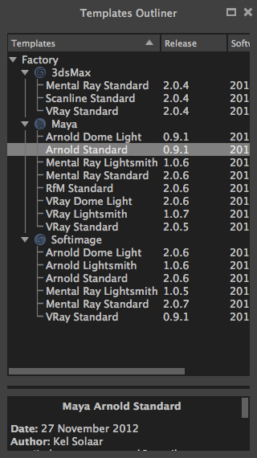 |
The Templates Outliner Component is where Templates are organized and reviewed. Selected Templates details are displayed in the bottom Templates Informations widget. The Component is tracking the Templates files on the disk and reload them automatically when modified.
Templates are sorted into 2 main categories:
- Factory (Templates from sIBL_GUI installation directory).
- User (Templates not from sIBL_GUI installation directory).
In those categories, Templates are sorted by 3d packages.
Columns Descriptions:
- Templates: Templates names.
- Release: Templates versions numbers.
- Software Version: 3d packages compatible version.
Interactions:
- Right clic: Displays a context menu described further.
-
Drag’n’drop:
- Drag’n’dropping some Templates files or directories from the Os will raise a message box asking confirmation for their addition into the database.
Context menu:

|
- Add Template ...: Adds the selected Templates file to the database.
- Remove Templates(s) ...: Removes selected Templates from the database.
- Import Default Templates: sIBL_GUI will scan for Templates into it’s installation directory and the user preferences directories.
- Filter Templates Versions: sIBL_GUI will filter the Templates keeping the highest version of multiple same Templates.
- Display Help File(s) ...: Displays Templates associated help files.
Addons Functionalities:
- Open Templates(s) Location(s) ...: Opens selected Templates directories.
- Edit Template(s) File(s) ...: Edits selected Templates in the Script Editor Component or custom user defined text editor.
Addons
About sIBL_GUI (addons.about)
| 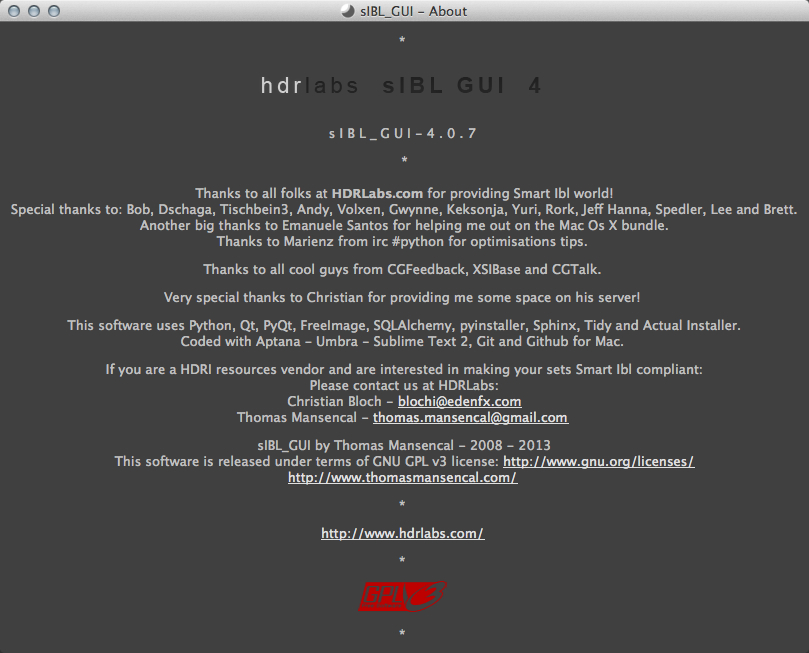 |
The About Component displays the About window.
Database Operations (addons.databaseOperations)
| 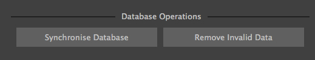 |
The Database Operations Component allows the user to launch some database maintenance operations.
Interactions:
- Synchronize Database Push Button: Forces database synchronization by reparsing all registered files.
- Remove Invalid Data Push Button: Removes invalid database entries ( Missing files, etc... ).
Gps Map (addons.gpsMap)
| 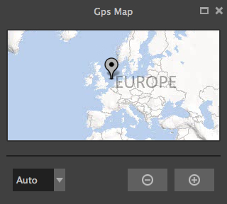 |
The Gps Map Component is embedding a Microsoft Bing Map into sIBL_GUI: Selecting some IBL Sets (Ibl Sets with GEO coordinates) in the Ibl Sets Outliner Component will display their markers onto the Gps Map.
Interactions:
- Zoom In Push Button: Zooms into the Gps Map.
- Zoom Out Push Button: Zooms out of the Gps Map.
-
Map Type Combo Box: Switches the Gps Map style.
- Auto: This map type automatically chooses between Aerial and Road mode.
- Aerial: This map type overlays satellite imagery onto the map and highlights roads and major landmarks to be easily identifiable amongst the satellite images.
- Road: This map type displays vector imagery of roads, buildings, and geography.
Ibl Sets Scanner (addons.iblSetsScanner)
The Ibl Sets Scanner Component is a file scanning Component that will automatically register any new Ibl Sets to the Default Collection whenever it founds one in an already existing IBL Sets parent directory. This behavior can be stopped by deactivating the Component.
Images Caches Operations (addons.imagesCachesOperations)
| 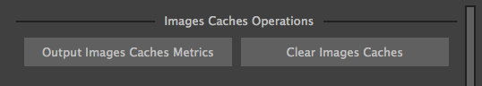 |
The Images Caches Operations Component allows the user to manipulate sIBL_GUI images caches.
Interactions:
- Output Images Caches Metrics Push Button: Outputs various images caches metrics: Images count, paths, sizes.
- Clear Images Caches Push Button: Clears the various images caches, the Python interpreter may not release the memory immediately.
Loader Script (addons.loaderScript)
| 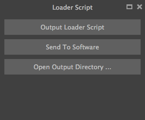 |
The Loader Script Component is providing the bridge between sIBL_GUI and the 3d packages. It parses the selected Ibl Set, extracts data from it, and feeds the selected Template with those data resulting in a loader script that can be executed by the 3d package.
Interactions:
- Output Loader Script Push Button: Outputs the loader script to the output directory.
- Send To Software Push Button: Sends a command to the 3d package that will execute the loader script.
- Convert To Posix Paths Check Box (Windows Only): Windows paths will be converted to Unix paths, drive letters will be trimmed.
Addons Functionalities:
- Open Output Folder Push Button: Opens the output directory.
Loader Script Options (addons.loaderScriptOptions)
| 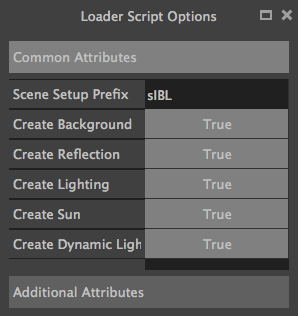 |
The Loader Script Options Component allows the user to tweak the way the loader script will behave in the 3d package. Templates attributes are exposed in 2 pages where they can be adjusted:
- Common Attributes: Common Template attributes (Refer to the current Template help file for details about an attribute).
- Additional Attributes: Additional Template attributes (Refer to the current Template help file for details about an attribute).
Templates settings are stored per version and restored each time one is selected in sIBL_GUI preferences directory.
Locations Browser (addons.locationsBrowser)
| 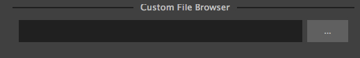 |
The Locations Browser Component provides browsing capability to sIBL_GUI, adding directory browsing at various entry points in sIBL_GUI Ui. The browsing is done either by the Os default file browser or an user defined file browser.
Default Supported File Browsers:
-
Windows:
- Explorer
-
Mac Os X:
- Finder
-
Linux:
- Nautilus
- Dolphin
- Konqueror
- Thunar
Interactions:
- Custom File Browser Path Line Edit: User defined file browser executable path.
Logging Notifier (addons.loggingNotifier)
The Logging Notifier Component displays logging messages in the status bar.
Online Updater (addons.onlineUpdater)
| 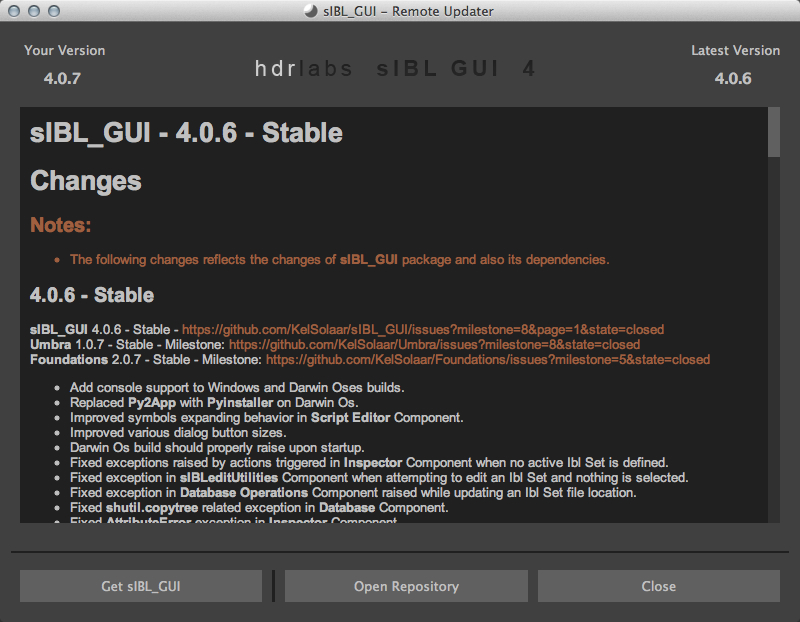 |
The Online Updater Component maintains sIBL_GUI and it’s Templates up to date by checking HDRLabs repository for new releases on startup or user request.
Interactions:
- Get sIBL_GUI Push Button: Starts sIBL_GUI download.
- Get Lastest Templates: Starts selected Templates download.
- Open Repository: Opens HDRLabs repository.
When a download starts the Download Manager window will open:
| 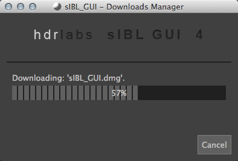 |
The Online Updater Component is configurable in the Preferences Manager Component:
| 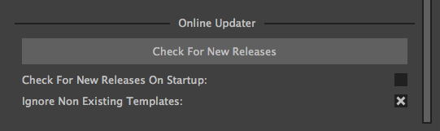 |
Interactions:
- Check For New Releases Push Button: Checks for new releases on HDRLabs repository.
- Check For New Releases On Startup Check Box: sIBL_GUI will check for new releases on startup.
- Ignore Non Existing Templates Check Box: sIBL_GUI will ignore non existing Template when checking for new releases, meaning that if a Template for a new 3d package is available, it will be ignored.
Projects Explorer (addons.projectsExplorer)
| 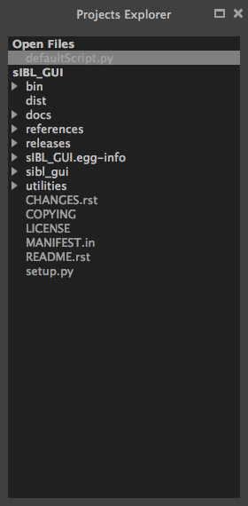 |
The Projects Explorer Component displays sIBL_GUI opened files and projects. It offers a global overview on what is being edited in the Script Editor Component.
Interactions:
- Right clic: Displays a context menu described further.
Context menu:
| 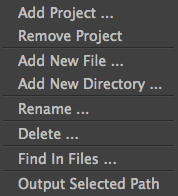 |
- Add Project ...: Adds a new Project.
- Remove Project: Removes selected Project.
- Add New File ...: Creates a new file under selected directory or next to selected file.
- Add New Directory ...: Creates a new directory under selected directory or next to selected file.
- Rename ...: Renames selected directory or file.
- Delete ...: Deletes selected directory or file.
- Find In Files ...: Search and replace in selected directory or file.
- Output Selected Path: Print selected directory or file path in the Script Editor.
Preview (addons.preview)
| 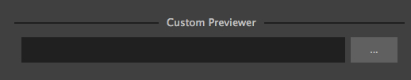 |
The Preview Component provides image viewing capability to sIBL_GUI through the use of the Internal Images Previewer or the application defined in the Preview Component preferences.
Interactions:
- Custom Previewer Path Line Edit: User defined Image Viewer / Editor executable path.
The Internal Images Previewer window provides basic informations about the current Image:
| 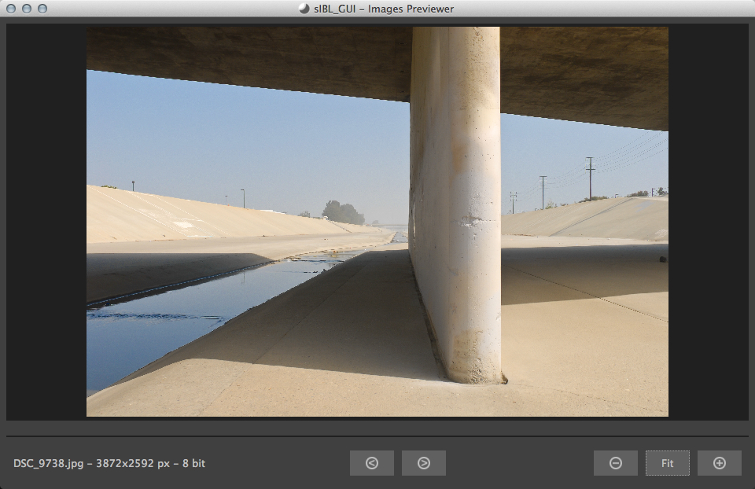 |
Interactions:
- Clic’n’dragging: Pans into the Image.
- Mouse Scrool Wheel: Zooms into the Image.
- Shortcut Key “+”: Zooms into the Image.
- Shortcut Key “-”: Zooms out of the Image.
- Previous Image Push Button: Navigate to the previous image.
- Next Image Push Button: Navigate to the next image.
- Zoom In Push Button: Zooms into the Image.
- Zoom Fit Push Button: Zooms fit the Image.
- Zoom Out Push Button: Zooms out of the Image.
Raw Editing Utilities (addons.rawEditingUtilities)
| 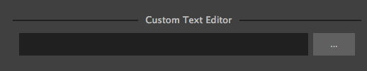 |
The Raw Editing Utilities Component provides text editing capability to sIBL_GUI, adding text edition at various entry points in sIBL_GUI Ui. The text edition is done either by the Script Editor Component or an user defined text editor.
Interactions:
- Custom Text Editor Path Line Edit: User defined Text Editor executable path.
Rewiring Tool (addons.rewiringTool)
| 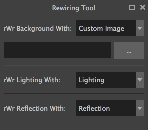 |
The Rewiring Tool Component is available by right clicking the main toolbar. This Component allows rewiring / remapping of an Ibl Set file to another file of that set or an arbitrary image. This widget is powerful because it’s possible to dynamically generate IBL Sets and arbitrary loads whatever HDR you want and still benefit from sIBL_GUI one click lighting setup.
Interactions:
- Combo Boxes: The current image will be remapped to the chosen entry.
- Path Line Edits: The current image will be remapped to the chosen custom image.
Search Database (addons.searchDatabase)
| 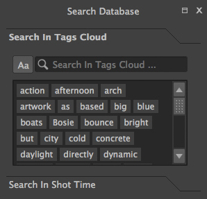 | 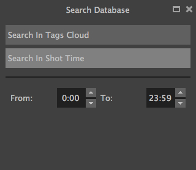 |
The Search Database Component enables search in the database. There are 2 pages providing different search options:
- Search In Tags Cloud: Searches in database Ibl Sets comments tags cloud generated.
- Search In Shot Time: Searches in shot time range.
Interactions:
- Search Database Line Edit: The string entered will be matched in the selected database field. Regular expressions are accepted. An autocompletion list will raise once characters starts being typed.
- Case Insensitive Matching Check Box: The string matching is done case insensitively.
Search In Shot Time:
- From Time Edit: Time range search start.
- To Time Edit: Time range search end.
sIBLedit Utilities (addons.sIBLeditUtilities)
| 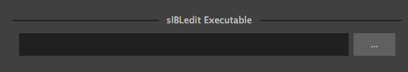 |
The sIBLedit Utilities Component provides a bridge between sIBL_GUI and sIBLedit.
Interactions:
- sIBLedit Executable Path Line Edit: sIBLedit executable path.
TCP Client Ui (addons.tcpClientUi)

|
The TCP Client Ui Component allows sIBL_GUI to connect to TCP servers. As a functionality test it's possible to connect sIBL_GUI to itself: ensure that both the TCP Client Ui and TCP Server Ui Components use the same address and port.
Interactions:
- Address Line Edit: TCP server address.
- Port Spin Box: TCP server port.
- File Command Line Edit: File command the TCP server uses to execute a script.
- Connection End Line Edit: TCP server connection end token.
TCP Server Ui (addons.tcpServerUi)

|
With the TCP Server Ui Component sIBL_GUI can be used as a TCP server and remote controlled.
Interactions:
- Port Spin Box: TCP server port.
- Autostart TCP Server Check Box: Starts the TCP server on sIBL_GUI startup.
- Start TCP Server Push Button: Starts the TCP server.
- Stop TCP Server Push Button: Stops the TCP server.
Trace Ui (addons.traceUi)
| 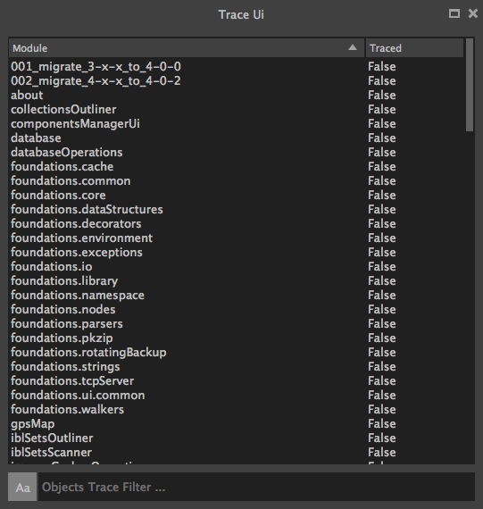 |
The Trace Ui Component is a development oriented Component allowing to trace execution of user defined modules. Tracing some modules doing intensive background work can stall sIBL_GUI and make it unresponsive.
Interactions:
- Objects Trace Filter Line Edit: Filters objects to be traced using a regex pattern.
Context menu:
| 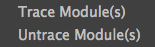 |
- Trace Module(s): Traces selected modules.
- Untrace Module(s): Untraces selected modules.
Faq
The following questions are answered by sIBL_GUI developer Thomas Mansencal and don't necessarily reflect other HDRLabs developer opinions and thoughts.
General Questions
Overall
Is sIBL_GUI Open Source?
I'm using sIBL_GUI 1 / 2 / 3, is there still support for it?
No, sIBL_GUI is developed by one person on his free time, cross version support can't be achieved. Any new version deprecate the previous one.
Can I pay to help me making sIBL_GUI run on my computer?
Can I pay you to make a custom template?
No, same as above, however if you need a custom template, we can discuss of what can be done. Just remember that sIBL_GUI is done on my free time.
Where are sIBL_GUI preferences stored?
- C:\Users\$USER\AppData\Roaming\HDRLabs\sIBL_GUI\$MAJOR_VERSION.$MINOR_VERSION on Windows 7
- C:\Documents and Settings\$USER\Application Data\HDRLabs\sIBL_GUI\$MAJOR_VERSION.$MINOR_VERSION on Windows XP
- /Users/$USER/Library/Preferences/HDRLabs/sIBL_GUI/$MAJOR_VERSION.$MINOR_VERSION on Mac Os X
- /home/$USER/.HDRLabs/sIBL_GUI/$MAJOR_VERSION.$MINOR_VERSION on Linux
I installed sIBL_GUI and its not starting, what can I do?
You need to launch sIBL_GUI into Debug verbose mode using the -v 4 command line parameter and send me back the logging sIBL_GUI_Logging.log and sIBL_GUI_Database.sqlite database files.
I'm having too many problems with sIBL_GUI x.x.x, are older versions still available?
I thought Loader Scripts are obsolete now?
Please refer to the first post of this thread: http://www.hdrlabs.com/cgi-bin/forum/YaBB.pl?num=1271612492 to see the development status of the various loader script.
Is there a difference between an Helper Script and a Loader Script?
Yes! Helper Scripts are additional scripts that help integrating sIBL_GUI into the target 3d package whereas Loader Scripts are native 3d package scripts enabling direct Smart Ibl support. One confusion source is that I also call Loader Scripts the scripts sIBL_GUI generates. Here is a link to the sIBL_GUI Helper Scripts: http://www.hdrlabs.com/cgi-bin/forum/YaBB.pl?num=1271609371/1#1
Is it possible to move the user preferences directory into sIBL_GUI installation directory, like in sIBL_GUI 2?
Using the -u / --userApplicationDatasDirectory command line parameter, you can define where sIBL_GUI 4 preferences are stored. You can easily pass sIBL_GUI installation folder to retrieve the portability of sIBL_GUI 2.
Rendering
What is the shift between the viewport visual feedback sphere and the render image?
- Constrain in position the visual feedBack to your render camera.
- Increase the visual feedBack scale.
Is it possible to use the three Smart Ibl maps without a Ray Switch Shader?
Yes you need to map each one on a different sphere and play with the different rays visibility of those spheres. Just remember than probing geometry will be slower than using a pure shading solution.
Is it possible to share a common Database file between multiple computers?
Shared Database Configuration: http://kelsolaar.hdrlabs.com/sIBL_GUI/Support/Documentation/Api/resources/pages/usage.html#id4
Operating System Questions
Windows
How do I launch sIBL_GUI with command line parameters?
Create or modify a shortcut to the executable, then append the parameters you want to use into the target field.
Mac Os X
How do I launch sIBL_GUI with command line parameters?
Open a terminal then issue the following commands with the parameters you want to use:
cd /Applications/sIBL_GUI\ 4.app/
./Contents/MacOS/sIBL_GUI
3D Packages Questions
Autodesk Maya
I'm getting that error: "LoaderScript | Socket connection error: '[Errno 10061] No connection could be made because the target machine actively refused it'!"
-
Autodesk Maya 2008 - 2012:
commandPort -n "127.0.0.1:2048";
-
Autodesk Maya 2010 - Windows Vista / 7 :
commandPort -n "127.0.0.1:2048"; commandPort -n ":2048";
How do I open automatically the command port in Autodesk Maya?
Open your userSetup.mel in Autodesk Maya script folder (Or create the file if it doesn't exists) and append the following lines:
-
Autodesk Maya 2008 - 2012:
commandPort -n ("127.0.0.1:" + `optionVar -q "sIBL_GUI_commandPort"`);
-
Autodesk Maya 2010 - Windows Vista / 7 :
commandPort -n ("127.0.0.1:" + `optionVar -q "sIBL_GUI_commandPort"`); commandPort -n (":" + `optionVar -q "sIBL_GUI_commandPort"`);
I have installed Autodesk Maya - Helper Script, what do I put in sIBL_GUI Executable Path field?
It's a convenient method to directly launch sIBL_GUI from within Autodesk Maya, just point to sIBL_GUI executable, then you can use the second shelf button to launch sIBL_GUI.
/Applications/sIBL_GUI.app/Contents/MacOs/sIBL_GUI 4.app
Autodesk Softimage
I'm getting that error: "LoaderScript | Socket connection error: '[Errno 10061] No connection could be made because the target machine actively refused it'!"
sIBL_GUI_XSI_Server Addon ( Windows Only ):
I'm getting that error: "' ERROR : 2424 - XSI failed to load a .NET plug-in. This error happens because the plug-in may have been compiled with a different version of XSI. Recompile the plug-in with the current version of XSI to fix the problem. ' <Plug-in: \\..\sIBL_GUI_XSI_Server\Application\Plugins\sIBL_GUI_XSI_Server.dll> ' <Current XSI version: X.X.XXX.X>"
You either:
- Don't have the correct sIBL_GUI_XSI_Server Addon compiled for your version of Autodesk Softimage.
- Didn't registered the sIBL_GUI_XSI_Server.dll file into the Windows GAC ( Global Assembly Cache ).
How do I register the sIBL_GUI_XSI_Server.dll file into Windows Global Assembly Cache?
You will then need to issue a command like this in an Administrator elevated prompt:
gacutil.exe /i C:\Addons\sIBL_GUI_XSI\Application\Plugins\sIBL_GUI_XSI_Server.dll
There is also an alternative way without gacutil.exe, it has been tested on a few computers and seems to work: You just need to drag'n'drop the sIBL_GUI_Server.dll into Windows GAC folder (C:\Windows\assembly).
Autodesk 3ds Max
I'm getting that error: "LoaderScript | Win32 OLE server connection error: '(-2147221164, 'Class not registered', None, None)'!"
Notice that you need to launch Autodesk 3ds Max as Administrator for that purpose.
What is this error with Autodesk 3dsMax_MR_Standard Template: "sIBL_GUI | Mental Ray Productions Shaders are not available!"?
"hidden"
to
# "hidden"
Or after backuping the original one, you can directly use one of those already edited files: Production Shaders Files